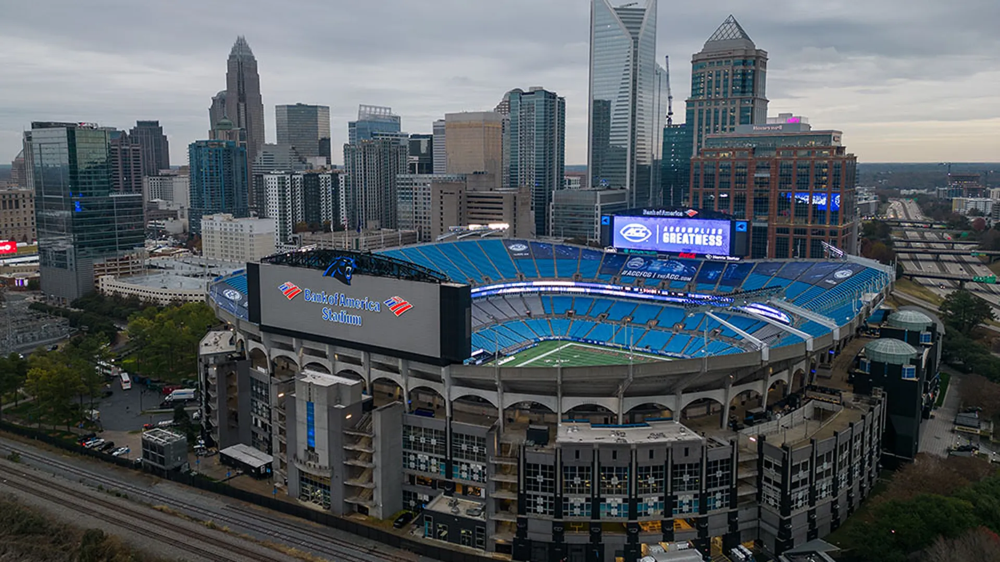

Bank of America Stadium

Located in the heart of Downtown Charlotte sits the Bank of America Stadium; home of the Carolina Panthers.
A beautiful sight to see from near and far. Great place for sports fanatics to be when home games occur. Event Space is also availiable at the stadium!